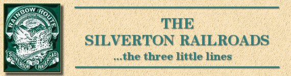

| I landed in Silverton with just $10 in my pocket and lived on one meal a day until I had found a job. There had been a big snow slide in the canyon ten miles from Silverton, covering the track to a depth of 60 feet. They had to shovel the snow out in benches, each man pitching the snow to a man above him a height of eight feet. |
| My first job was herding horses at night for the Mears Transportation Company. I did this for about a week. It seemed as the work for these horses grew harder, and the grass grew scarcer, and when I could stand it no longer I brought the herd in and announced that bad as I needed a job, I did not propose to starve a lot of dumb animals to hold it. |
| Otto Mears, whom I had never met, happened to be in the office and turned and asked what I meant. I told him in order to make a showing the Superintendent was starving the horses instead of buying feed. He ordered this stopped at once, and gave orders that I was to have a team. |
| I said, no, I would not work for the Superintendent for I knew what would be ahead of me, but Mears gave me the North Star run and said I would be responsible to no one but him. Right there I made a mortal enemy of the Superintendent and a life long friend, the best friend I ever had, of Otto Mears. |
| Mears was a little Polish Jew and proud of the fact that he made his start carrying a pack on his back. He told me that he gave five sax of flour for his wife. His wife, a fine woman, said that was only a joke. If it was so, it certainly was a bargain. He was known as the Pathfinder of Colorado, was on the Capitol Commission, and his picture stands in the Capitol today. His first important work was a system of toll roads, covering a large part of Colorado. |
| When I met him he had a large freighting outfit in Silverton which had always been a white elephant. I liked Silverton, liked my work and spent the happiest days of my life there. I only hope I can go back some day. It was not a great while before Mears had put me in charge of the business, and this is where I remained until we disposed of it and went into railroading. |
| I had found a man who would put up the money for a mule train. He wanted to know why I was doing this. I said I could not live on my salary. He offered to raise my salary, but I contended our overhead was high enough. He said, "Let me get the contracts for you. I know the people and can do better than you." I said "all right" and quit work and waited. Finally one day Mears said "Now look here, the only contracts you would fool with are the Whale and Telluride business, and they are all gone. Now you go back to work. Your pay has been going on all the time. Your name has never been taken off the pay roll." I should have been mad as a hornet but I was not. |
| Our road had been built on a railroad grade, so it simplified the work of building a railroad. Our Engineer was a man named Gibbs. For a time we had both wagon and railroad work combined. Our freighting outfit consisted of about one hundred head of horses and mules. I naturally had applications from my cow puncher friends, and from time to time sent for the cream of them until I finally had as good an organization as could well be gotten together. |
| Fifty per cent of my working hours were spent in the saddle, and I was fortunate in securing what I think was the best saddle horse I ever saw or at least ever used. He did not belong to me but to Otto Mears. Whenever I mentioned buying him Mears would say "you have him, and if anything happens to him it is my loss". I called him Dick. He was a beautiful sorrel, and he could outrun anything in the country for three hundred yards, as some racing sharps learned one time to their sorrow. A man challenged my horse to a race with him. I did not know that it was a put up job and that the man's horse was a race horse. The word spread to everyone in town about the race. The boys had hooked the engine onto a couple of flat cars and come down to the edge of the race track, and they were loaded full with people for everything of course was free. My horse led all the way and easily won the race. The engineer blew his whistle and the crowd went wild. |
| Dick was later to be my brides saddle horse, and she was known as the lady with the horse. |
| My intended wife was teaching school at Red Mountain. Mears was not sure about this marriage business, but there was nothing to be done about it. One time she came down to Silverton on the assurance that I would get her back in time for school, and as luck would have it I got orders to first gather up a load of ties and take them along. I told Mears what I was up against, and he said "Is it more important than getting the ties to the front?". I said it was to me, and he said "All right, take the engine and the coach and take the lady up to Red Mountain, but hurry back after those ties". Can you wonder I loved him? |
| After our marriage he was almost as glad as I. When the time was ripe we switched from freighting to railroading. I was in charge of track laying for a time, and first one thing and then another, but when the time came to run trains and carry passengers, Mears insisted that I must be the conductor. In vain I protested that I knew nothing about railroading. "That's all right" he said, "You can hire men who do, but you must handle the money." We had no tickets and everything was cash at first. The fare from Silverton to Red Mountain was $1.60 as I remember it. |
| I was later promoted to Roadmaster. I think I liked that better; at any rate it was different. I used to make nearly twice as much on the side as my salary amounted to by buying hay or grain for people and shipping it in. This interfered with a dealer in Silverton and he used to make a fuss about it, and of course he was right. |
| For a long time the company paid no attention, but at last said they guessed I would have to discontinue the practice. Of course I could never be satisfied to settle down on just a salary, so after giving them 30 days in which to break in a new man, I quit and started a lumber and feed business (eventually purchasing the LaPlata Coke and Coal Company and selling lumber and coal) in Silverton in order to give my friend something to worry about in earnest. |
| Mr. Mears decided to do some real railroad building, and started in with the construction of the Rio Grande Southern running from Durango to Ouray. One little incident came up that, although it didn't amount to much, affected Mears deeply. He was having some trouble meeting his pay roll and for a wonder I happened to have $4000 in the bank, for which there was no pressing need, so I sent it over to him unsolicited, and it simply floored him. |
| We had a panic during my business career in Silverton, and they were pretty dark days. I took $1000 and strapped it around my waist to get out of the country with it if necessary. It proved quite valuable. My banker's (he was an Englishman) affairs went badly and his bank was closed. His wife came to me one evening and said she wished I would go down and talk to her husband because he was so despondent. We walked the canyon for milesand talked. I persuaded him that there were other things in the world besides the few dollars locked up in the bank. I told him of the money I had in my belt, and I said I had a good team of horses, and if everything went to the dogs as it seemed likely we would take my outfit and head for British Columbia. For a wonder it put new life in him and he got busy and got depositors waivers enough so that in a short time he had the bank open and everything was lovely. The poor fellow got in trouble a few years later though, and I was in Europe at the time and I got a cable saying my banker had committed suicide and the bank was closed. |
| I stayed in Silverton about 15 years and they were the happiest years of my life. I moved to Boulder to put my children in school there, but they ended up going to Stanford, Vassar and Lawrenceville. We built a pretty good home at the corner of Mapleton and Broadway. |
| Mears died not long ago in Pasadena, California, and his body was cremated and his ashes scattered to the four winds over Animas Forks as he had requested. I have never had a friend that I hold dearer. |
|
The Narrow Gauge Circle is written, maintained,and hosted by: Mark L. Evans Send Comments to:Mark L. Evans All original materials, text, and digital images Copyright © 1995-2010 Mark L. Evans. All rights reserved. Imitation is said to be the "sincerest" form of flattery.....Please don't flatter us without permission. |